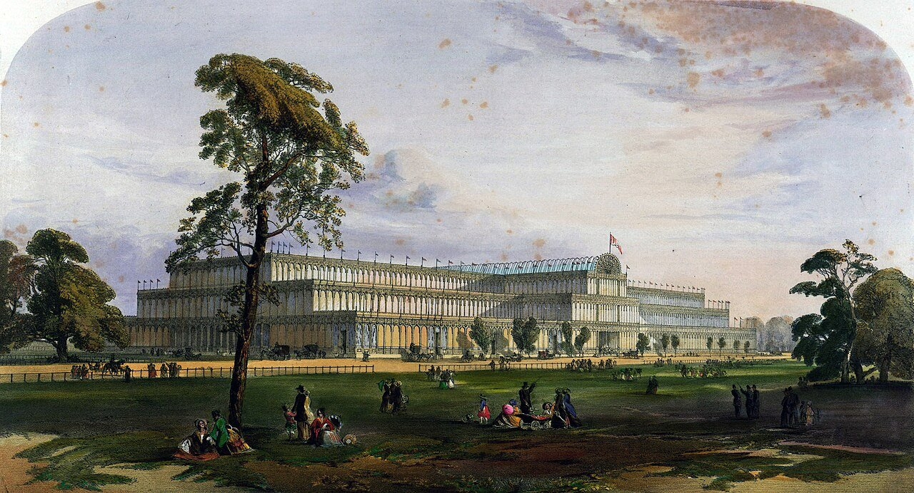

The Victorians are the people who lived in Britain while Victoria was queen: from 1837 to 1901. That is about 125 to 190 years ago, roughly five or six grandparents in a row.

Victoria was queen for 63 years, and in that time Britain changed faster than ever before. Here are some firsts.
Facts on this page come from the sources listed in research/07-victorian-era-overview.md and research/01-queen-victoria.md. Population figures are census figures; "about five or six grandparents in a row" takes a generation as 25 to 30 years and is an estimate.